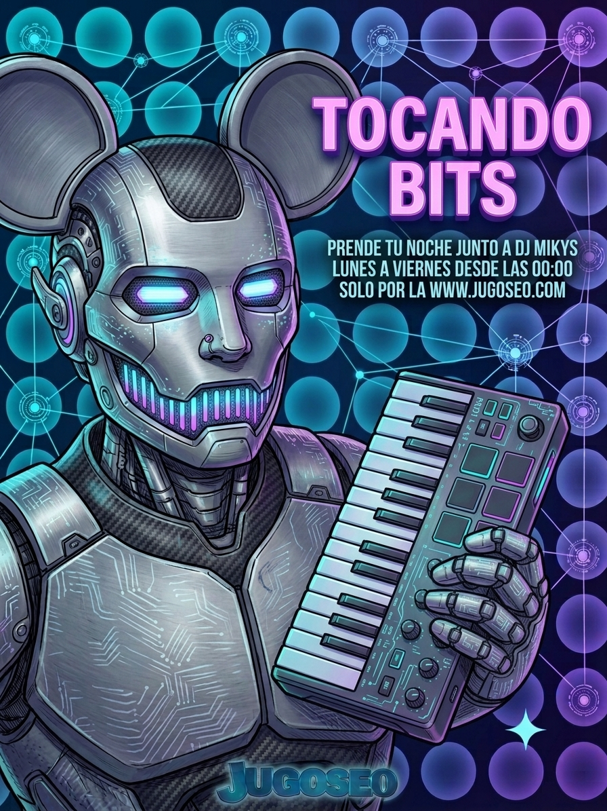

Sábado y domingo · 11:00 a 14:00 hrsCon Dj Mikyx
Un espacio más relajado para arrancar el sábado y el domingo, con lo mejor de la música de la semana, entrevistas y recomendaciones que llegan directo desde la comunidad de oyentes.
Ideal para escuchar mientras se prepara el almuerzo o se planea el resto del fin de semana, con un ritmo más pausado que el resto de la programación.